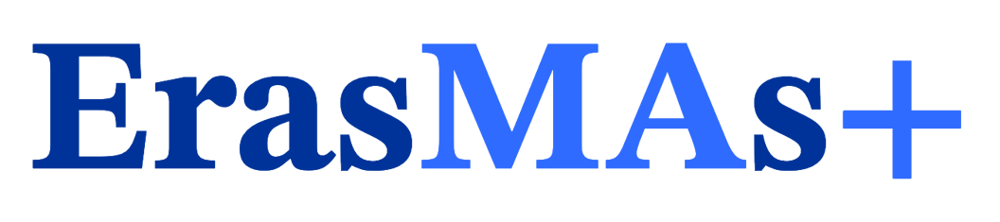

Wiskunde is van essentieel belang voor onze samenleving, maar de wiskundeprestaties van leerlingen in Europa nemen af. Wiskundeangst treft ongeveer 30% van de leerlingen en 10% van de leerkrachten – vooral vrouwen – en heeft een negatieve invloed op zowel de prestaties in wiskunde als op studie- en loopbaankeuzes. Ons project ondersteunt instellingen voor hoger onderwijs door gerichte leermiddelen te integreren in lerarenopleidingen. Hierdoor wordt de kwaliteit van het wiskundeonderwijs versterkt en wordt getracht wiskundeangst te voorkomen – een vaak onderbelicht, maar cruciaal thema binnen de lerarenopleiding.
Internationaal erkende Europese experts op het gebied van wiskundeangst en -onderwijs zullen instellingen voor hoger onderwijs voorzien van meertalige, gratis en gebruiksvriendelijke materialen, waaronder:
Het project wil een belangrijke leemte in de lerarenopleiding opvullen door het bewustzijn rond wiskundeangst te vergroten en praktische interventies aan te bieden. Door lerarenopleidingen in het hoger onderwijs te versterken, zullen toekomstige leerkrachten beter in staat zijn om wiskundeangst vroegtijdig te herkennen en aan te pakken. De integratie van deze hulpmiddelen in opleidingsprogramma's zal het zelfvertrouwen van leerkrachten vergroten, bijdragen aan een positief leerklimaat en op hun beurt de wiskundecompetenties in heel Europa versterken.
Het project wordt uitgevoerd door een internationaal consortium van de volgende universiteiten:
Het project wordt beheerd door de Foundation for the Development of the Education System en gefinancierd door de Europese Commissie binnen het programma Erasmus+ Samenwerkingspartnerschappen in het hoger onderwijs (KA220-HED), subsidie-ID: 2025-1-PL01-KA220-HED-000360673, voor een totaalbedrag van € 400.000.